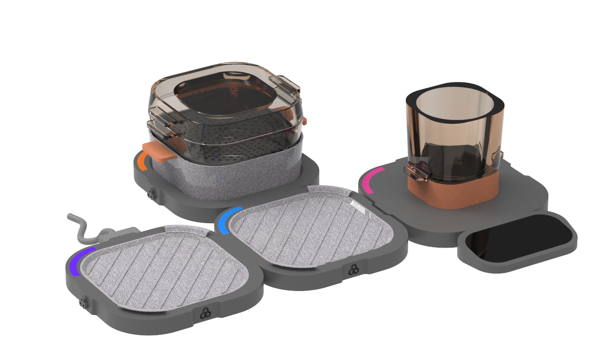

Sustainable
DESIGN
For Better Future
Flexy
Team Mates: Gamze URAS, Gökçe Kardeş



Flexy is a multiple funtioning cooking platform.
Flexy is a portable, compact, adabtable and flexible cooking platform which is suitable for small offices.
Steam cooking set contains lid, pot and perforated vessel.
User can upgrade the practice by buying extra vessel and can make double steam cook.
Bain-marie vessel also became a mixing container.
For grilling practice people can use same heating based module.
O-lapse
Team Mates: Eren BAL, Eldem REHBER, Kardem GÜNDAY, Tuğçe SÖZEN
O-lapse is a product family for laundry care for tiny houses.
This product family includes washing machine, garment steamer and drying rack.
O-lapse allows it’s users to wash their clothes, sterilize or dry them with steam garment and hang their clothes.
User can upgarde the practice by buying extra vessel and can make double steam cook.
Also visit my behance page!